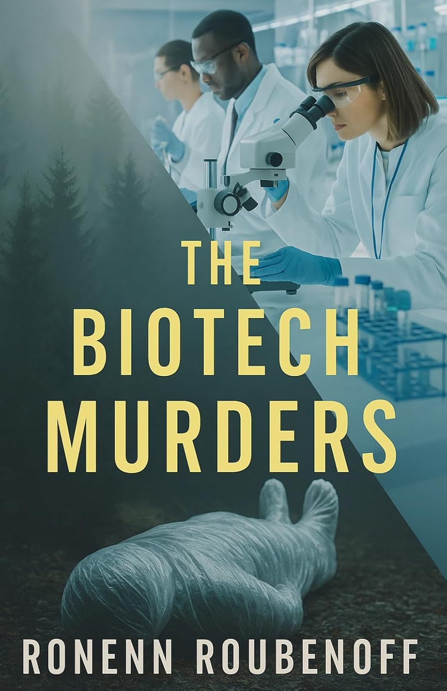

Biotech has changed all our lives. Starting with now seemingly primitive tools of molecular biology in the 1970’s, through the Human Genome Project in the 1990’s, and to gene editing in living people today, this industry has invented cures for diseases that were previously death sentences. If you know anyone with cancer, arthritis, psoriasis, obesity, or colitis, they’re probably being treated with a biotech drug, and are better off for it.
But like any human endeavor, biotech has good guys and bad ones. There is greed, jealousy, pettiness, and hatred, alongside brilliance and creativity. This story is fictional, but the people and events in it are based on my experience during almost a quarter century in biotech. That was plenty of time to meet people one would like to knock off, but so far, no one has gotten away with murder. At least, as far as I know…
